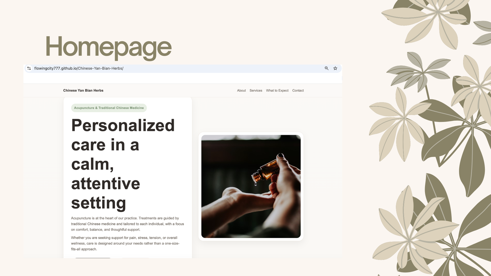

Mosaic Threads
UX Design
Frontend
Creative Tool
A web tool that transforms personal images into simplified knitting patterns using curated yarn-inspired color palettes.
Transforms personal images into simplified knitting patterns using curated color palettes.
Focused on balancing visual meaning with practical usability for real-world making.

Acupuncture Clinic Website
UX Case Study
Service Design
Healthcare
A calm, trustworthy clinic website designed to help patients understand services, reduce first-visit uncertainty, and request appointments more easily.
This project focused on real-world constraints: clear communication, responsible healthcare language, and a practical booking flow that remains manageable for the clinic owner.